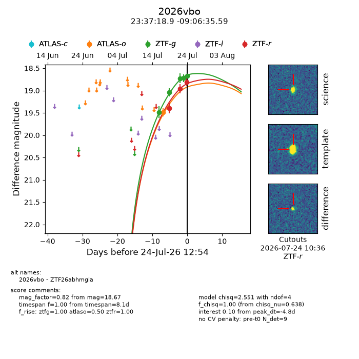
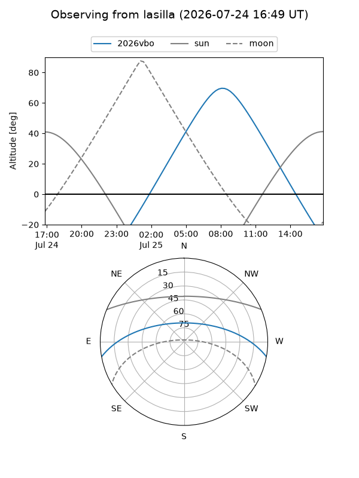
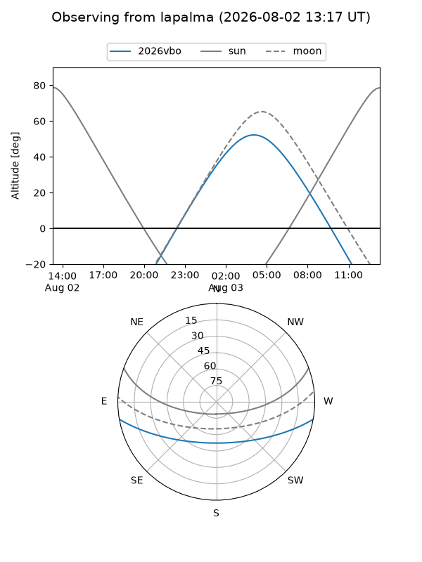
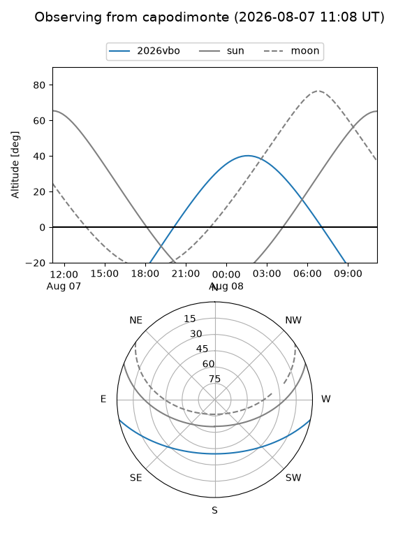
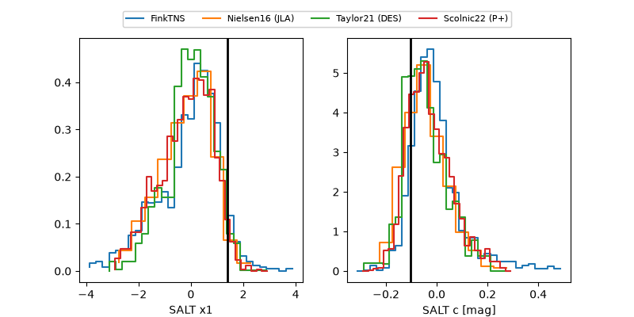

2026vbo
Target 2026vbo at 2026-07-24 12:56
Aliases and brokers:
FINK-ZTF: ztf.fink-portal.org/ZTF26abhmgla
Lasair-ZTF: lasair-ztf.lsst.ac.uk/objects/ZTF26abhmgla
ALeRCE-ZTF: alerce.online/object/ZTF26abhmgla
YSE-PZ: ziggy.ucolick.org/yse/transient_detail/2026vbo
TNS name: wis-tns.org/object/2026vbo
Direct TNS query: direct search
alt names
ZTF26abhmgla (ztf,fink_ztf)
2026vbo (tns,yse)
Coordinates:
equatorial (ra, dec) = 354.3286,-9.10989
equatorial (HMS+DMS) = 23:37:18.87,-09:06:35.59
galactic (l, b) = (75.2755,-64.87667)
Flags:
TNS type: nan
peak dt: -4.8
Photometry:
last atlaso=19.49, ztfg=18.67, ztfr=18.81
1 atlaso, 5 ztfg, 3 ztfr detections
Lightcurve

Visibility



Additional plots
